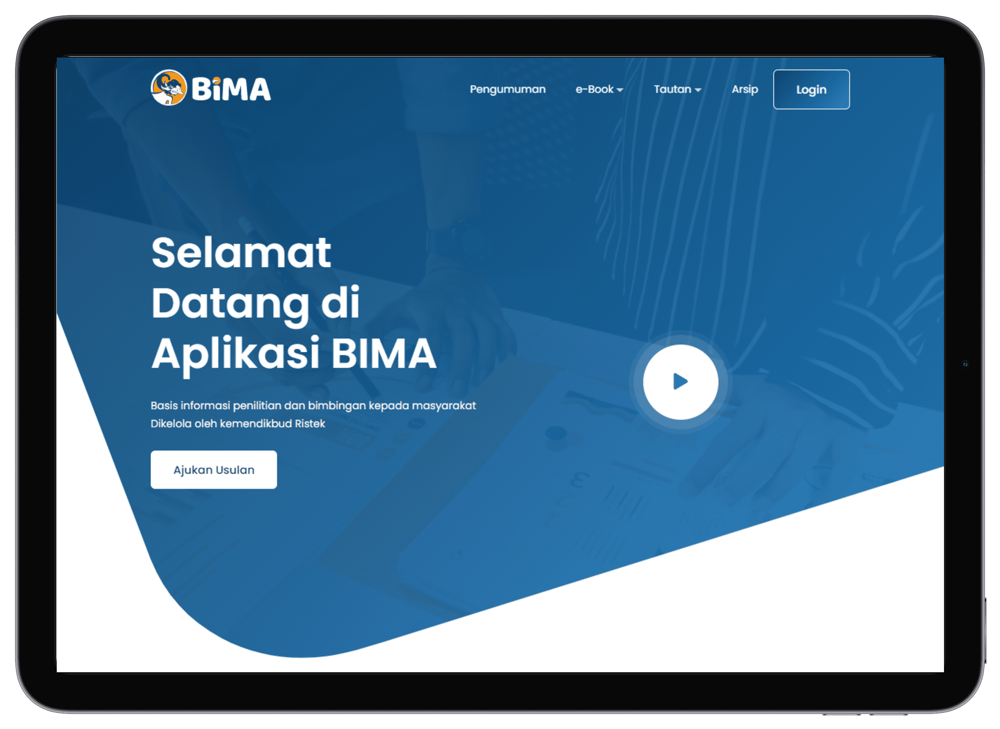
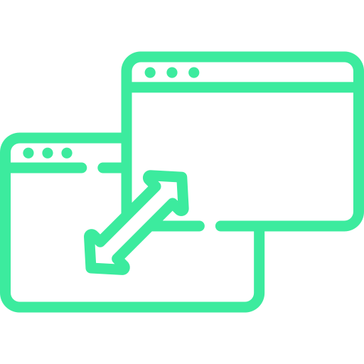
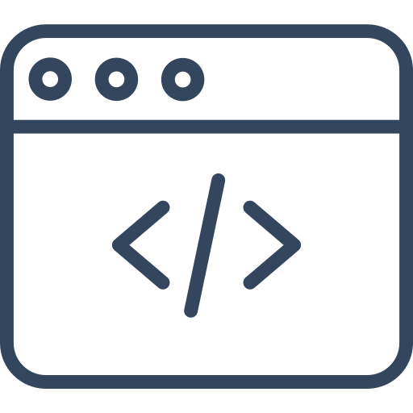

Fitur baru yang tersedia di BIMA untuk membantu Anda membuat dan mengolah usulan Anda.
Mendukung penuh untuk membuat usulan penelitian maupun pengabdian.
Proses cepat dan mudah gunakan.
Data yang aman dan kredibilitas terjamin.

Mudah untuk mengatur usulan penelitian dan pengabdian.

Desain Yang Responsif Dan Mudah Digunakan

Dokumentasi YAng Lengkap Dan Mudah Dibaca
BIMA memiliki fitur-fitur yang mudah digunakan untuk membantu Anda mengatur dan mengontrol akun Anda secara online.

Dosen membuat Usulan Proposal Penelitian dan Pengabdian kepada Masyarakat untuk diajukan kepada Kemdiktisaintek Review Usulan Proposal Usulan Proposal Penelitian dan Pengabdian kepada Masyarakat dinilai oleh Reviewer

Usulan Proposal Penelitian dan Pengabdian kepada Masyarakat dinilai oleh Reviewer Kemdiktisaintek
Usulan Proposal Penelitian dan Pengabdian kepada Masyarakat dinilai oleh Reviewer Kemdiktisaintek